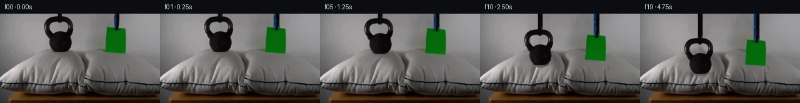

![首帧]()

Round 00
2026-11-05T11:01:20.274395+00:00像素候选变化代码 +183/−0inspection 更新
pixels 24fe30c5d8b8520d · code 4605553200d710ed
查看本轮 generate.py 真实 diff
--- previous/generate.py +++ current/generate.py @@ -0,0 +1,183 @@ +from pathlib import Path + +import cv2 +import numpy as np +from PIL import Image, ImageDraw, ImageFont + +import artifact_io + + +ROOT = Path(__file__).resolve().parent +W, H = 256, 144 + + +def largest_seeded_component(mask, seeds): + """Keep threshold components touched by any supplied (x, y) seed.""" + n, labels, _, _ = cv2.connectedComponentsWithStats(mask.astype(np.uint8), 8) + wanted = set() + for x, y in seeds: + label = int(labels[y, x]) + if label: + wanted.add(label) + if not wanted: + return np.zeros_like(mask, dtype=np.uint8) + return np.isin(labels, list(wanted)).astype(np.uint8) + + +def object_masks(src): + gray = cv2.cvtColor(src, cv2.COLOR_RGB2GRAY) + yy, xx = np.mgrid[:H, :W] + + # Kettlebell: geometric gates prevent similarly dark pillow folds/table + # from joining the dark-object threshold at its lower edge. + gate_handle = (((xx - 95) / 25.0) ** 2 + ((yy - 21) / 20.0) ** 2 <= 1.0) + gate_body = (((xx - 96) / 21.5) ** 2 + ((yy - 43) / 22.5) ** 2 <= 1.0) + gate_cord = (xx >= 91) & (xx <= 101) & (yy <= 12) + bell_core = (gray < 108) & (gate_handle | gate_body | gate_cord) + bell_core = largest_seeded_component(bell_core, [(96, 1), (95, 11), (96, 42)]) + bell_core = cv2.morphologyEx(bell_core, cv2.MORPH_CLOSE, np.ones((3, 3), np.uint8)) + bell_alpha = cv2.GaussianBlur(bell_core.astype(np.float32), (3, 3), 0.55) + bell_alpha[bell_core > 0] = np.maximum(bell_alpha[bell_core > 0], 0.94) + + # The green card is chromatically distinct. Its two-tone blue/black cord + # is selected only in the narrow known suspension corridor. + r, g, b = [src[:, :, i].astype(np.int16) for i in range(3)] + green = (g > 55) & (g > r + 18) & (g > b + 14) & (xx >= 166) & (xx <= 203) & (yy >= 20) & (yy <= 65) + cord_gate = (xx >= 181) & (xx <= 191) & (yy <= 28) + blue_or_dark = ((b > r + 18) | (gray < 82)) & cord_gate + paper_core = (green | blue_or_dark).astype(np.uint8) + paper_core = cv2.morphologyEx(paper_core, cv2.MORPH_CLOSE, np.ones((3, 3), np.uint8)) + paper_alpha = cv2.GaussianBlur(paper_core.astype(np.float32), (3, 3), 0.5) + paper_alpha[paper_core > 0] = np.maximum(paper_alpha[paper_core > 0], 0.96) + + return bell_core, bell_alpha, paper_core, paper_alpha + + +def reconstruct_background(src, bell_core, paper_core): + # Inpaint only the source footprints. A two-pass fill is stable for the + # smooth wall and fabric and preserves every unrelated source pixel. + removal = ((bell_core | paper_core) * 255).astype(np.uint8) + removal = cv2.dilate(removal, np.ones((5, 5), np.uint8), iterations=1) + bgr = cv2.cvtColor(src, cv2.COLOR_RGB2BGR) + first = cv2.inpaint(bgr, removal, 5, cv2.INPAINT_TELEA) + clean = cv2.inpaint(first, removal, 3, cv2.INPAINT_NS) + return cv2.cvtColor(clean, cv2.COLOR_BGR2RGB) + + +def warp_pillow(base, contact): + """Subtle localized vertical fabric displacement after simultaneous contact.""" + if contact <= 0: + return base.copy() + yy, xx = np.mgrid[:H, :W].astype(np.float32) + # Heavy bell makes a visible, broad indentation; paper makes only a trace. + bell_x = np.exp(-0.5 * ((xx - 96.0) / 22.0) ** 2) + bell_y = np.exp(-0.5 * ((yy - 75.0) / 24.0) ** 2) + paper_x = np.exp(-0.5 * ((xx - 185.0) / 19.0) ** 2) + paper_y = np.exp(-0.5 * ((yy - 67.0) / 19.0) ** 2) + displacement = contact * (4.8 * bell_x * bell_y + 0.55 * paper_x * paper_y) + active = (yy >= 50) & (yy <= 112) + map_y = yy - displacement * active + return cv2.remap(base, xx, map_y, cv2.INTER_LINEAR, borderMode=cv2.BORDER_REFLECT_101) + + +def add_soft_ellipse(frame, center, axes, opacity): + if opacity <= 0: + return frame + mask = np.zeros((H, W), np.float32) + cv2.ellipse(mask, center, axes, 0, 0, 360, float(opacity), -1, cv2.LINE_AA) … diff truncated; 96 more lines …